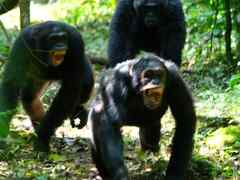
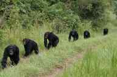
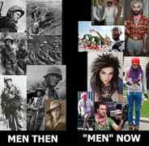

Corey is an iconoclast and the author of 'Man's Fight for Existence'. He believes that the key to life is for men to honour their primal nature. Visit his new website at primalexistence.com


Chimpanzees and bonobos are our closest evolutionary relatives with whom we share anywhere from 95 to 99 percent of our genes. It should then come as no surprise that we also share many common behaviour patterns with them as well. And while we humans share similarities with the two apes, the two exist under a completely opposite social order.
The chimpanzees organize themselves into a patriarchal order with the alpha male at the top. While chimps are often portrayed as cute and playful creatures, what many people don’t realize is just how savage and violent they really are (I’ve seen pictures of people who had their entire faces ripped off by them). In the wild, chimpanzees exist as warrior tribes that go on regular patrols to guard their territory, engage in hunting expeditions, as well as fight wars with the other tribes.
Bonobos, on the other hand, exist in a peaceful matriarchal order. Their tribes are ruled by group of females who form a sisterhood with an alpha female as their leader. Unlike their chimpanzee counterparts, the male bonobos are weak and ineffectual. The males are practically a bunch of mama’s boys who cling onto their mothers all the way into their adulthood as they are only able to derive power and status through their mothers.
Bonobos, the only other species that engage in face-to-face sexual intercourse.
Besides the matriarchal order—which is already unique among the primates—bonobos distinguish themselves as highly sexual species. They have frequent casual sex on a daily basis (albeit lasting only about ten seconds) in every way and every pairing imaginable. Sex is used to greet, bond, decrease stress, resolve conflicts, etc.
So where do we fit in?
I have a theory that we humans, due to our superior ability to adapt, oscillate between the patriarchal order of the chimpanzees and the matriarchal order of the bonobos depending on the social conditions that we live in. That said, we can all agree that much of our industrialized society has moved away from the old patriarchal order to a more gynocentric society with matriarchy as the end goal, and I think by learning from the lives of these two apes, we can gain a better understanding of our own human social structure, masculinity, and sex relations.

The reason why patriarchy thrives, nay, is necessary among the chimpanzees is because male strength and aggression are indispensable in protecting the tribe against external threats as well as for hunting and securing new territories. On the other hand, the only reason why bonobos are able to exist in a matriarchal utopia is precisely because they have no external threats and live in an environment abundant with fruits (their primary diet) and other sources of nourishment, eliminating any real need for male violence.

Note the size differences. I can almost picture the male bonobo in skinny jeans.
For humans, to see what lack of warfare and violence can do to men, just take a note of how emasculated Japanese and Swedish men have become since their warrior pasts. This is also reflected in how our Western society has transitioned away from patriarchy as a result of prolonged peace since the end of WWII.
Of course, warfare and violence are not the only factors that sustain a social environment favourable for patriarchy, but it is still the major factor. Just compare the war ridden regions of the world to our peaceful and prosperous urban centers, which is more patriarchal? Even exceptions like Saudi Arabia—which have been a relatively peaceful society—has only been able to prop up its patriarchal rule through strict religious dogma and brute force. And even they are finally succumbing to changes.

In both the chimpanzees and the bonobos, it is the sex that forms a unified group that controls the other sex. Female chimps don’t dare challenge the authority of the powerful males who often beat them to keep them under control. Likewise, male bonobos are powerless against the closely-knit group of females who band together to keep the males in check. The male bonobos are isolated and seemingly unwilling to form any sort of group of their own because they don’t have any practical reason to do so.
Human males today suffer from a similar sense of isolation due to the disintegration of exclusive male groups and the recent influx of females into male spaces. While females are organized into feminist groups that exclude men, men being told that they are forbidden to form groups of their own. If this is not an active effort by our society to systematically emasculate us and leave us powerless I don’t know what is.
I’ve met few people who tried to normalize homosexuality by arguing that animals engage in them too—conveniently ignoring the fact that animals also engage in rape, incest, pedophilia, and necrophilia. What they also don’t realize is that much of these homosexual behaviours are observed only in captivity.
Have you ever wondered why flamboyant homosexuality only seems to flower in big cities? Watch Jane Goodall explain how homosexuality is unseen in chimpanzees and other animals in the wild and only seem to appear when they are placed in unnatural environments:
But of course, she isn’t entirely correct in her assessment as we know that bonobos in the wild engage in plenty of homosexual activity (in all ages). So what makes them the exception? We can only speculate, but I strongly suspect that it has a lot to do with the total emasculation of the males and the resulting absence of masculine identity in bonobo societies.
We humans today are witnessing a rising prevalence of homosexuality and other sexual deviances just as our society is becoming more and more urbanized and hostile to masculinity. The urban centers which we humans live in can be viewed as cages where we are sheltered. And as our society turns increasingly gynocentric like the bonobos, we can expect to see increasing number of men transform into effeminate homosexuals and future Caitlyn Jenners. Note how most sex changes are from men to women and not the other way around.
Both chimpanzee and bonobo males are able to satisfy their sexual urges pretty much whenever they want. For the bonobos, this is because the females, in spite of possessing all the power, make sure to keep the male aggression at bay by giving them all the sex they need.
However, in the human world, male sexual energy is instead both suppressed and exploited at the same time. It is suppressed through draconian laws designed to spread fear while the media work hard to pathologize normal, male sexuality. At the same time, men’s sex drive is also being actively exploited by the porn and sex industry that are now worth billions.
Not surprisingly, women too are capitalizing on men’s sexual desire by feeding on male attention using social media, using them as drones to do their bidding, and also by keeping them thirsty and desperate enough to enter marriage voluntarily for further exploitation. Women today want all the benefits of living in a bonobo-style matriarchy while using men as utilities to be exploited. This sort of arrangement allows women to eat their cake and have it too while men are left fighting for the crumbs. And after a while, many men will lose hope and end up becoming dreadfully frustrated, with some resorting to suicide or—on the extreme end—going on a killing spree.
What we are going through today is the transition of our society from a patriarchal order akin to the chimpanzees to the matriarchal order of the bonobos. Men are becoming systematically emasculated from a young age as masculinity is seen as something toxic to be “cured” of. All the while, women, gays, and now transgenders are being promoted above normal, healthy men by our deranged society. If we continue on with this trend for couple of more decades, I expect most Western men to become weak and dysfunctional man-children who must supplicate to women and government for everything.

Be clear about what we are faced with. The issue is no longer about gender equality or rights—it never has been. This is all about social control. And the best way to control men is by decimating their unity and eradicating masculinity as an identity to be reckoned with. You must choose whether you want to see this trend continue or not and decide if you will fight back against this force.
Read More: 10 Surprising Facts About Sleep